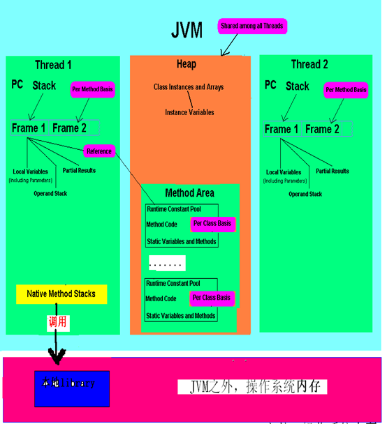
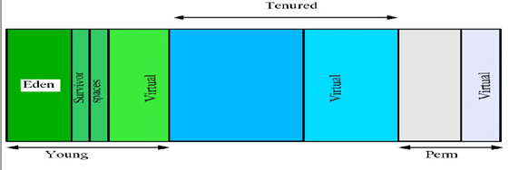
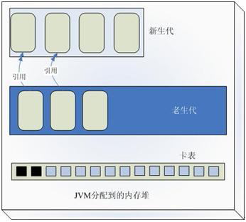
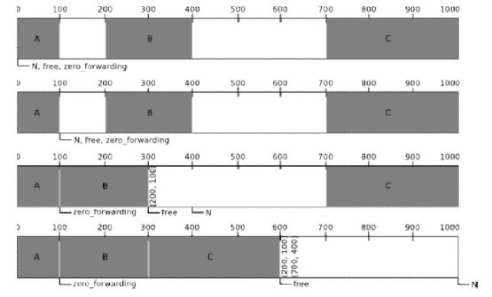

Java知识
Table of Contents
JVM

Figure 1: java virtual machine
Class Loader
装载class文件的内容到 Runtime data area中的method area
- Bootstrap ClassLoader : 用C++编写的, JVM自带的类装载器，用来装载核心类库
- ExtClassLoader
- AppClassLoader: 可由用户扩展
Execution Engine
执行classes中的ByteCode，不同JDK实现自己的Exectuion Engine, 每个运行中的线程都有一个Execution engine的实例
Native Interface
与native libraries交互，和其它编程语言交互的接口
Runtime Data Area
jvm的内存, heap和method area是所有线程共有的
Heap
- java运行时创建的所有类实或数组都放在同一个堆
- 一个JVM只有一个Heap，多个线程共享一个Heap
- java.lang.OutOfMemoryError: Java heap space
Method area
- 被装载的class的信息存储在Method area的内存中, 静态类，静态类变量，静态类方法也都保存在这里
- 一个JVM同样只有一个Method Area
- java.lang.OutOfMemoryError: PermGen full
Java stack
- 方法执行时会的传入参数，传回参数，以及方法中的局部变量
- java.lang.StackOverflowError
Program Counter
- PC寄存器的内容总是指向下一条将被执行指令的地址
- 每一个线程都有它自己的PC寄存器
Native method stack
- 和原生方法有关的区域
- jvm无法控制的native heap outOfMemory

Figure 2: jvm memory model
HashTable 和 HashMap的区别
- HashTbale线程安全, HashMap线程不安全
- HashTable的hash值直接用的key对象的hash值， HashMap的hash值是根据key对象的hash值重新计算
- HashTable的key，value都不可以为null, 而HashMap的key，value可以为null
- HashMap因此必须使用containsKey方法来判断是否有某个key，而不能直接用get(key)
- 初始大小和扩容不一样
- 内部遍历不一样， hashtable是Enumeration， hashMap是Iterator
ArrayList, LinkedList的区别
- ArrayList内部实现是数组，LinkedList是通过双向链表实现
- 末尾追加操作，ArrayList和LinkedList开销一样
- 中间删除，增加，LinkedList远远好于ArrayList
- 从头到尾遍历，两者效率差不多
- 根据索引随机访问，ArrayList远远好于LinkedList
- ArrayList因为要对数组保留一定的余量，所以空间开销要大于LinkedList
- ArrayList会由于容量变化，而有扩容操作
immutable class
不变类的实例一旦被创建，其状态就不会发生变化
- 线程安全
- 缓存计算的结果
- 可以被reuse
String, String Builder, String Buffer的区别
- String是个不可变类，每次对String的操作都会新建一个对象
- StringBuffer, StringBuilder不会每次新建对象
- tringBuffer线程安全，StringBuilder线程不安全
String应该避免new, 字符串连接不应该直接用+，而是StringBuilder
spring框架
ioc
控制反转/依赖注入，把依赖的类采用接口的方式，利用Set函数，传入Bean的内部
aop
面向切面的编程，对容器内的Bean进行方法干涉，在特定方法执行前/后进行一些其他的、可配置的操作
动态代理
java.lang.reflect.InvocationHandler接口可以达到这种干涉的效果
- 继承java.lang.reflect.InvocationHandler， override方法org.klose.aop.proxy.DefaultInvocationHandler#invoke
- 把继承的InvoketionHandler类通过java.lang.reflect.Proxy#newProxyInstance(classLoader, interfaces, InvokationHandler)绑定
- 调用绑定产生的Iterface对象
- java的动态代理类只能面向接口
- 对于普通的类需要使用cglib
垃圾回收器
java对象分代区
Young 年轻代 属于Heap
一个Eden区, 对象在Eden区中生成，两个Survivor区
- 当Eden区满时，还存活的对象将被复制到Survivor区（两个中的一个）
- 当这个Survivor区满时，此区的存活对象将被复制到另外一个Survivor区
- 当第二个Survivor区也满了的时候，从第一个Survivor区复制过来的并且此时还存活的对象，将被复制年老区(Tenured)
Tenured年老代 属于Heap
存放的都是生命期较长的对象
Perm（持久代）
JVM specification中的 Method area，存放静态类，方法，变量，垃圾回收对持久代无影响

Figure 3: java object generation
垃圾回收算法
reference counting 引用计数
在每一个对象中增加一个引用的计数，这个计数代表当前程序有多少个引用引用了此对象, 此对象的引用计数变为0，此对象就可以作为垃圾收集器的目标对象来收集
- 优点： 简单，不需要暂停应用
- 缺点： 循环引用无法处理
跟踪收集器
暂停整个应用程序，然后开始从根对象扫描整个堆，判断扫描的对象是否有对象引用
- 在新生代收集的时候minor gc只需要扫描新生代，而不需要扫描老生代
- 卡片标记将老生代分成了一块一块的，划分以后的每一个块就叫做一个卡片，JVM采用卡表维护了每一个块的状态，当JAVA程序运行的时候，如果发现老生代对象引用或者释放了新生代对象的引用，那么就JVM就将卡表的状态设置为脏状态，每次minor gc的时候就会只扫描被标记为脏状态的卡片

Figure 4: card mark
Mark-Sweep Collector 标记-清除收集器
标记清除收集器停止所有的工作，从根扫描每个活跃的对象，然后标记扫描过的对象，标记完成以后，清除那些没有被标记的对象
- 优点：解决循环依赖
- 缺点：耗时较长
Copying Collector 复制收集器
复制收集器将内存分为两块一样大小空间，某一个时刻，只有一个空间处于活跃的状态，当活跃的空间满的时候，GC就会将活跃的对象复制到未使用的空间中去，原来不活跃的空间就变为了活跃的空间
- 优点：只扫描可以到达的对象，不需要扫描所有的对象，减少了应用暂停的时间
- 缺点：额外的空间消耗，复制对象有开销
Mark-Compact Collector 标记-整理收集器
- 在第一个阶段，首先扫描所有活跃的对象，并标记所有活跃的对象
- 第二个阶段首先清除未标记的对象，然后将活跃的的对象复制到堆的底部

Figure 5: mark compact collector
jvm垃圾回收算法
- 新生代采用"Mark-Compact"策略，垃圾收集器命名为minor gc
- 老生代采用了"Mark-Sweep"的策略，老生代的GC命名为full gc
- System.gc()强制执行的是full gc
- 空闲的时候会调用
- 堆内存不足会调用
- object的finialize方法在执行垃圾回收时会被调用
减少GC
- 不要显式调用System.gc()
- 尽量减少临时对象的使用
- 对象不用时最好显式置为null
- 尽量使用StringBuffer,而不用String来累加字符串
- 能用基本类型如int, long,就不用Integer,Long对象
- 尽量少用静态对象变量
内存泄漏
某些对象本身是可达的，但是永远不会被使用
- 静态集合类HashMap，Vector中对象
- 监听器
- 数据库连接